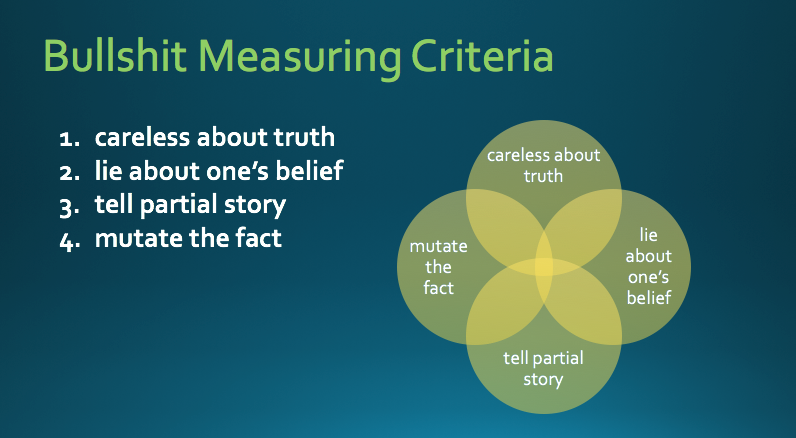
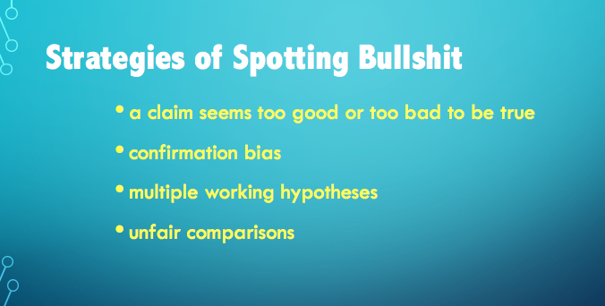

What is bullshit?
Bullshit is one either does not care about the truth, lies about his or her belief, only tells partial story, or mutates the fact in order to achieve the effects he or she wants.
How many types of bullshits are there?
Bullshits can have different types from different angles. Notice bullshit does not necessarily have to be negative. It could also be positive, such as beautiful lies, which qualified for bullshit due to lying about one's belief. Sometimes it can also be neutural especially when one uses exaggerations or common expressions to make one's points or express certain feelings that we may all understand. However, the line between negative and neutral bullshits often can be blurry, so we will only have "good intention" and "not good intention" types here.

What makes a statement become a bullshit?
If a statement meets any of the four criteria, it is considered as a bullshit.
What are some strategies to spot BS?
These strategies are taken from Info 198 Class offered by the University of Washington.
How to measure the magnitude of a bullshit?
1. If a statement meets any of the four criteria above,
it is considered as a bullshit.
2. Once a statement is qualified for bullshit, it can have
one type of sources and one type of intentions, per "Bullshit
Types Diagram" above. Intention types and source types do
not affect the magnitude of the bushshit.
3. According to the Venn diagram above, the more criteria a
statement qualifies, the bigger the magnitude of the bullshit, and the
darker the yellow region, vise versa.
4. If a bullshit is to the public, the magnitude should add 1.
5. If a bullshit is educational, the magnitude should add 1.